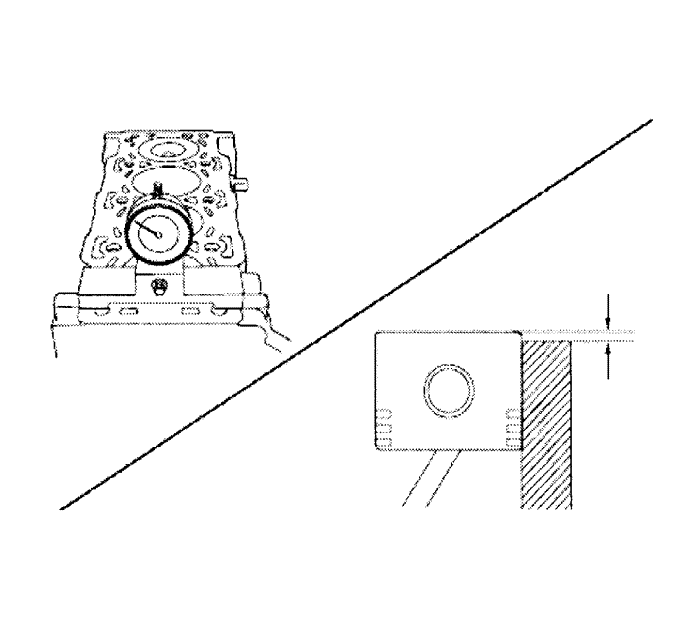
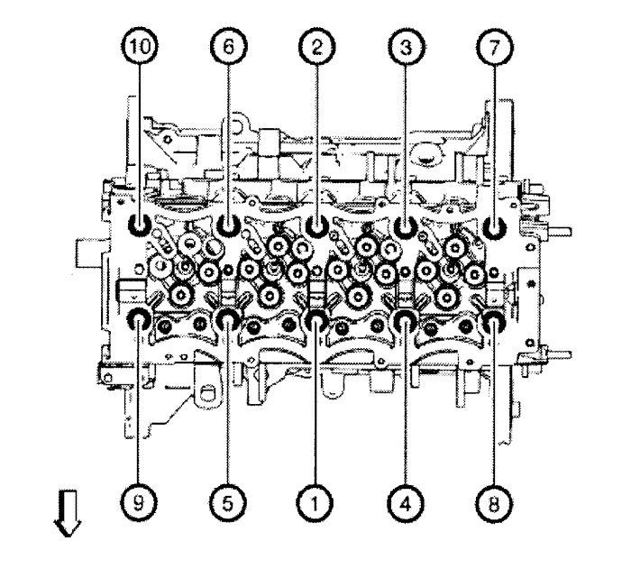

Montaje de la culata y la junta
Herramientas especiales
EN-50437 Indicador de altura de PMS del pistón
Si desea informarse sobre herramientas regionales equivalentes, consultar Herramientas especiales .
Procedimiento de limpieza
- Limpie la superficie de la culata.
- Limpie la superficie del bloque del motor.
- Limpie los pernos de la culata.
- Limpie los orificios del tornillo del bloque del motor.
Selección de la junta

- Alinee el PMS del pistón.
- Limpie el pistón y la superficie de sellado del bloque motor.
- Mida el grosor del saliente del pistón utilizando el calibrador de altura de TDC del pistón EN-50437.
- Repita el procedimiento de medición en el resto de cilindros y calcule la media de los valores de proyección del pistón medidos.
- Seleccione la junta de culata conforme a las siguientes especificaciones.
Saliente del pistón (mm)
| Grosor de la junta (mm)
|
0.21-0.30
| 1,05
|
0.31-0.39
| 1,15
|
0.40-0.49
| 1,25
|
Procedimiento de instalación

- Monte la culata (2) y la junta nueva (3).
Precaución: Consulte Precaución con las fijaciones en la sección Prólogo

Nota: Utilice siempre tornillos de culata nuevos.
- Coloque los pernos de fijación de la culata (1).
Apretar
Apriete los 10 pernos de la culata en orden a 30 N·m + 100 N·m + 90° (22,1 lib. pie + 90° + 90°).
| © Copyright Chevrolet Europe. All rights reserved |